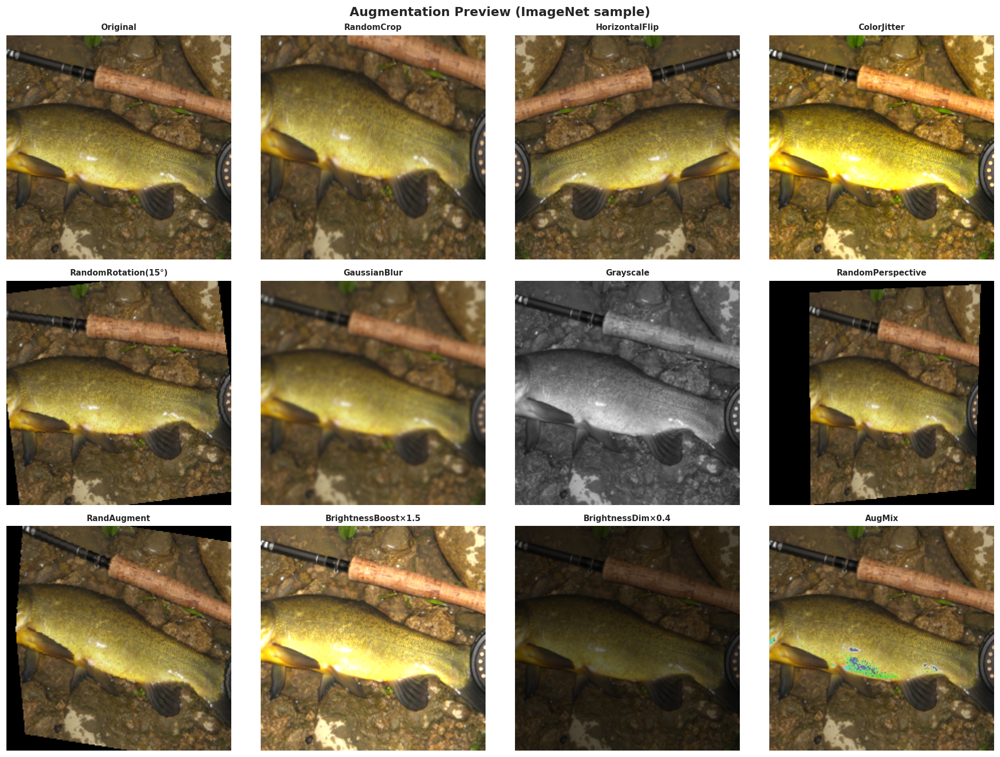

Preprocessing
Preprocessing & dataloader
Train/val/test transforms, augmentation strategy, and loader hyperparameters for the balanced 20-class ImageNet subset (10k images).
Sources: Section 2 (Hyperparameters) and Section 4 (Dataset Prep) from the image branch notebook; figures from
assets/image.
Splits
Train / val / test
Balanced 70 / 15 / 15 split over 20 classes.
| Split | Images | Notes |
|---|---|---|
| Train | 7,000 | 70% of total |
| Validation | 1,500 | 15% |
| Test | 1,500 | 15% |
| Total | 10,000 | 20 classes × 500 each |
Transforms
Preprocessing pipeline
Image-only transforms used for train vs val/test.
| Stage | Transform | Parameters |
|---|---|---|
| Train | RandomResizedCrop | 224×224, scale=(0.6, 1.0) |
| Train | RandomHorizontalFlip | — |
| Train | ColorJitter | brightness/contrast/saturation=0.3, hue=0.05 |
| Train | RandAugment | num_ops=2, magnitude=9 |
| Train | Normalize | mean=[0.485, 0.456, 0.406], std=[0.229, 0.224, 0.225] |
| Val/Test | Resize | 256 |
| Val/Test | CenterCrop | 224 |
| Val/Test | Normalize | Same as train |
From the image branch hyperparameter config.
Loader
DataLoader hyperparameters
Batching, seeding, and regularization settings.
| Parameter | Value |
|---|---|
| Image size | 224×224 |
| Batch size | 16 |
| Seed | 42 |
| MixUp α | 0.4 |
| CutMix α | 1.0 |
Per model
Augmentation by backbone
MixUp / CutMix usage per model family.
| Model | MixUp / CutMix |
|---|---|
| CNN-Scratch | MixUp only |
| ResNet-Scratch | CutMix only |
| ViT-Scratch | CutMix only |
| All Pretrained | None |
Preview
Augmentation examples
Visual reference of the 12 augmentation strategies.

Augmentation preview
Original, RandomCrop, HFlip, ColorJitter, Rotation, GaussianBlur, Grayscale, Perspective, RandAugment, Brightness ×1.5 / ×0.4, AugMix.